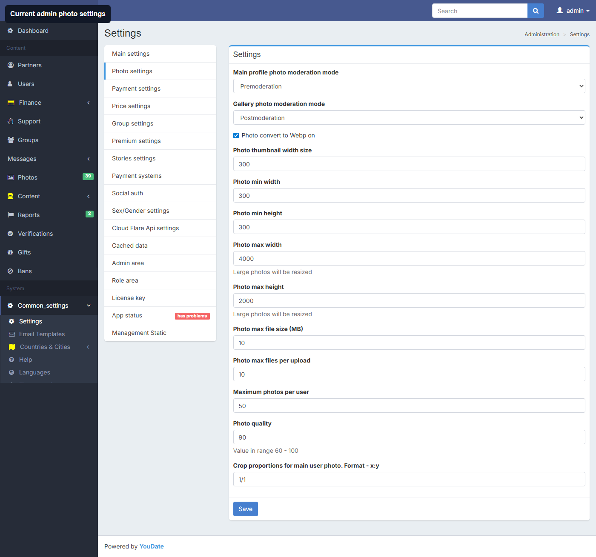
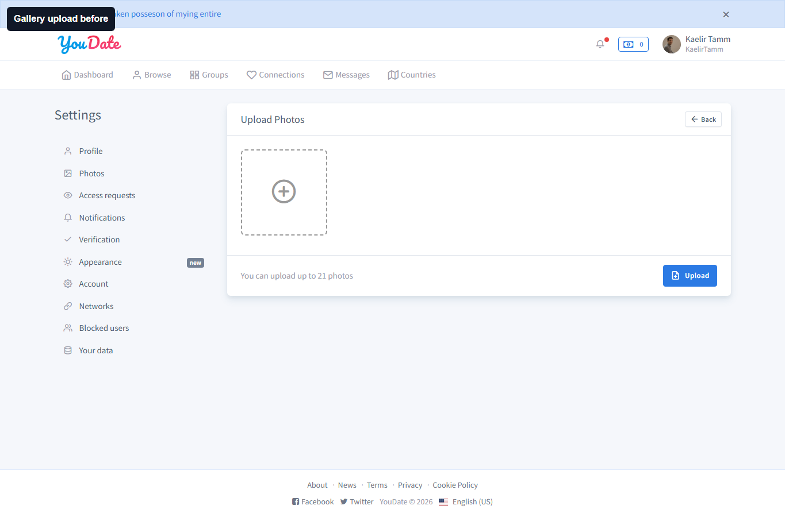
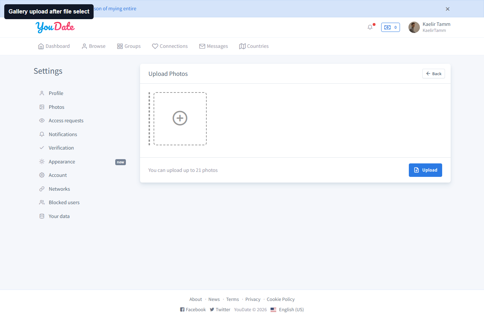
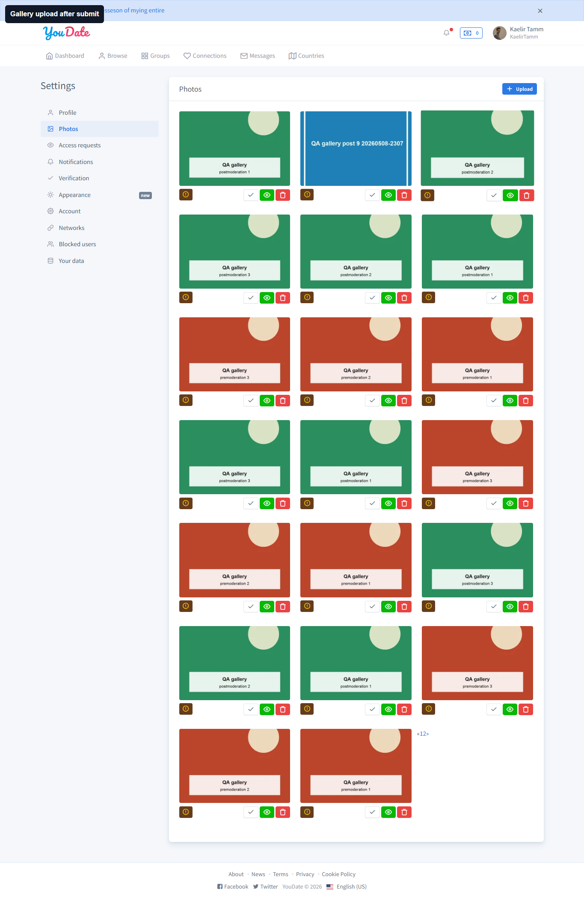
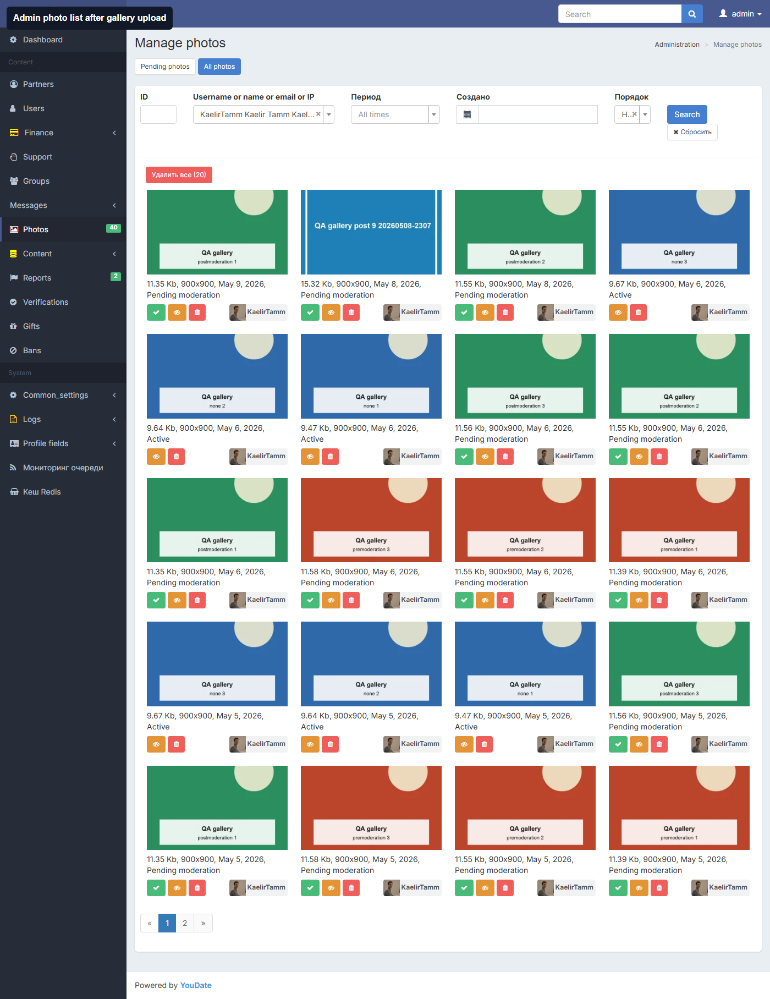
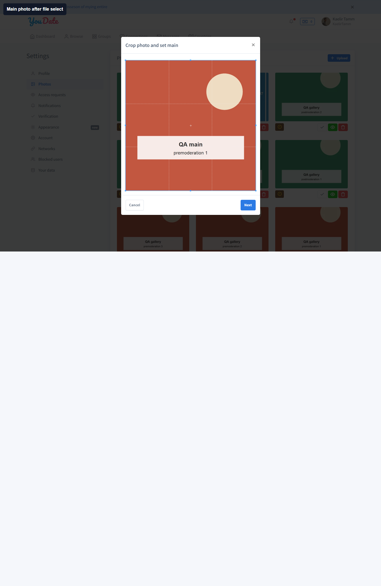
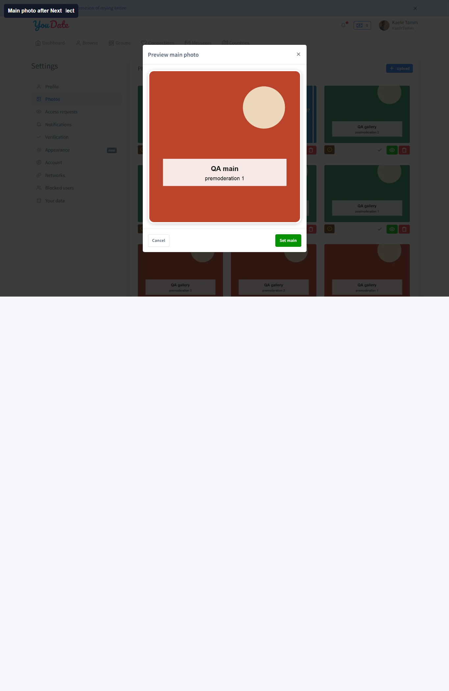

Photo upload current settings
Свежий live-проход: settings photo прочитаны, gallery upload создает новую запись, main/profile upload падает на пустом photo id после crop/preview.
Время: 2026-05-09T09:47:42.028Z - 2026-05-09T09:50:18.509Z. Пользователь: U167 KaelirTamm. Main mode: premoderation; Gallery mode: postmoderation.
Блок для Игоря
| Severity | ID | Суть | Как искать |
|---|---|---|---|
| high | MAIN-PHOTO-UPLOAD-CREATED-ID-001 | Main/profile photo upload создает новую photo запись: FAIL | Игорю проверить JS цепочку main-photo cropper: при новой загрузке в cropEditor.setPostParams уходит fromPhotoId=undefined, после Next hidden input name="photo" остается пустым, финальный Set main получает пустой photo id. |
Проверки
| Статус | ID | Что тестировал | Что получил |
|---|---|---|---|
| PASS | PHOTO-SETTINGS-CURRENT-MODES-READ | Текущие режимы модерации фото прочитаны из админки | main=premoderation, gallery=postmoderation. |
| PASS | GALLERY-PHOTO-UPLOAD-CREATED-ID | Gallery photo upload создает новую photo запись | Новые gallery photo IDs: 849:Pending moderation. |
| FAIL | MAIN-PHOTO-UPLOAD-CREATED-ID | Main/profile photo upload создает новую photo запись | После выбора файла и Next скрытое поле photo осталось пустым; при Set main страница показала "From Photo Id must be an integer"; новый photo ID в админке не создан. |
Evidence screenshots






